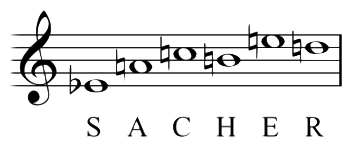

A musical cryptogram is a cryptogrammatic sequence of musical notes, a sequence which can be taken to refer to an extra-musical text by some 'logical' relationship, usually between note names and letters.
In other words, a musical cryptograme is a little musical phrase or motif that contains the name of the author in which every letter is related with an specific note. This motif was used by the authors to give their works a unique signature.
Cryptoname is a musical cryptogram that allows the user to write his name in an input box, and based on the cryptogram used by the German composer Johann Sebastian Bach, the user will be able to hear how does Bach would have played his name. All depending on the letters that make up the user's name and size.
The way it works depends on the method that was used to create the cryptogram. For example, the "French" method use diatonic notes from A to G and use an alphabet that starts in the letter "H" and finishes in letter "Z". Therefore, this means that "H" is encrypted by note "A" while "N" is encrypted by note "G" and so on.
| A | B | C | D | E | F | G |
| H | I | J | K | L | M | N |
| O | P | Q | R | S | T | V |
| W | X | Y | Z | - | - | - |
It is very simple! You just need to type your name and click on the button below to hear your name!
Tecnológico de Monterrey Campus Ciudad de México
Sistemas de Audio Digital para Web y Dispositivos Móviles
Proyecto Final
Viernes 3 de Mayo del 2018